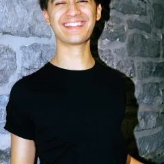
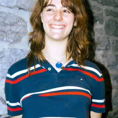
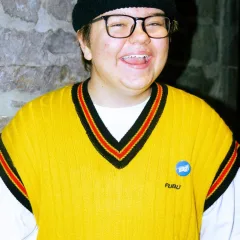
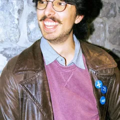
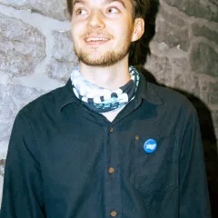

Notre équipe

Leonard Vidal
Co-porte-parole
Léonard s’implique pour l’indépendance du Québec depuis 2021. C’est lors d’une année en Afrique du Sud, loin du Québec, qu’il développe une passion profonde pour la culture et son sentiment d’appartenance au Québec. À son retour, il cofonde le comité souverainiste du Cégep du Vieux Montréal et ensuite le Mouvement Étudiant Indépendantiste (MÉI).

Catherine Lamoureux-Schmidt
Co-porte-parole
Catherine est une étudiante de première année en droit à l’UQÀM. Féministe affranchie, elle s’intéresse à plusieurs causes, principalement à l’indépendance du Québec depuis la dernière année et demie. Co-fondatrice d’un comité souverainiste à son cégep, elle poursuivra naturellement son implication au sein du MÉI et le co-fondera aux côtés de ses pairs.

Rémi Fecteau
Relations internes
Rémi est un amoureux du Québec qui s’implique activement dans le mouvement indépendantiste depuis 2025. Il croit que l’histoire doit être écrite par les peuples du Québec. Depuis son arrivée à Montréal, il est engagé au sein du Mouvement Étudiant Indépendantiste et du Comité indépendantiste du Collège Ahuntsic.

Louis-Simon Poirier
Secrétaire
Étudiant en philosophie, c'est d'abord l'idée de souveraineté populaire qui a amené Louis-Simon à militer en faveur de l'indépendance. C'est l'ouverture et l'inclusivité qui l'a attiré au sein du MÉI. Fort de l'expérience associative, il a choisi d'occuper le poste de secrétariat afin que toute voix puisse avoir la portée qu'elle mérite.
Saskia Wagner
Trésorière
Militante indépendantiste depuis 2021, Saskia est étudiante en sciences humaines et agit à titre de trésorière au sein du Mouvement Étudiant Indépendantiste. Elle a été attirée par ce rôle comme une façon concrète d’allier les mathématiques à la cause indépendantiste. Elle défend un projet d’indépendance inclusif et ouvert d’esprit, visant à bâtir un Québec pays à l’image de ces valeurs.

Alexis Gagnon
Mobilisation
Alexis est woke, syndicaliste, socialiste et s’exprime en français. Étudiant en économie à l’UQÀM, il souhaite un projet de société inclusif et ouvert d’esprit. À bas le capitalisme et vive le Québec libre!